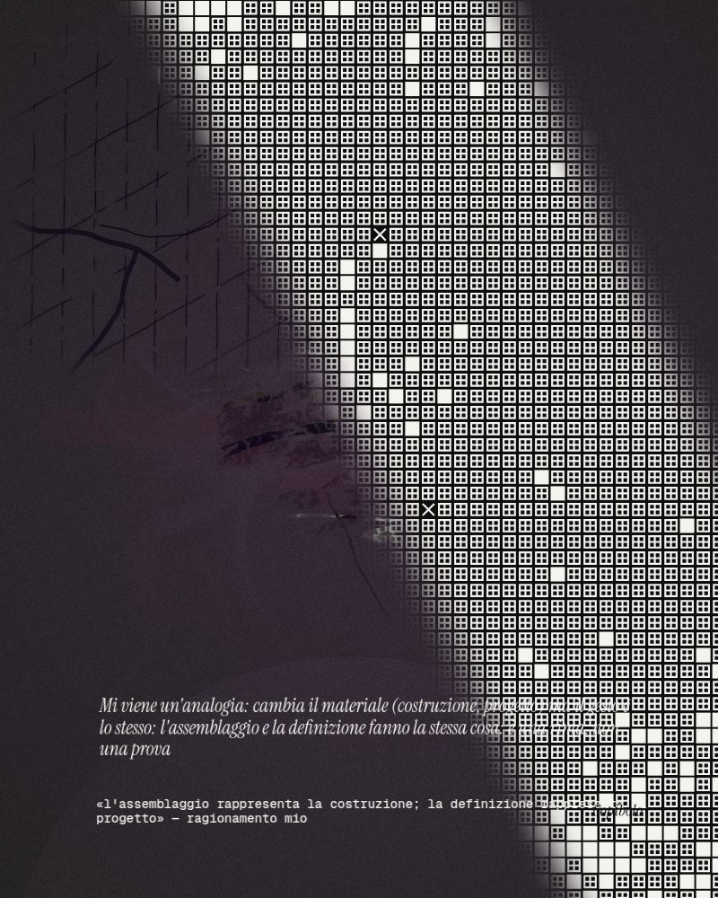

Giorno 1811

Mi viene un'analogia: cambia il materiale (costruzione, progetto) ma il gesto è lo stesso: l'assemblaggio e la definizione fanno la stessa cosa: è una rima, non una prova
ho letto "Rapporto"; "rapporto" lo capisco solo per definizioni; nel suo significato c'è crocevia, crocicchio; ricerca "letto" (esplorare): Come si guarda letto da vicino?; enunciato: «Mi viene un'analogia: cambia il materiale (costruzione, progetto) ma il gesto è lo stesso: l'assemblaggio e la definizione fanno la stessa cosa: è una rima, non una prova» (l'ho dedotto io: l'assemblaggio rappresenta la costruzione, e la definizione rappresenta il progetto)
Oggi: assemblaggio. Ho letto "Rapporto"; "rapporto" lo capisco solo per definizioni; nel suo significato c'è crocevia, crocicchio; ricerca "letto" (esplorare): Come si guarda letto da vicino?; enunciato: «Mi viene un'analogia: cambia il materiale (costruzione, progetto) ma il gesto è lo stesso: l'assemblaggio e la definizione fanno la stessa cosa: è una rima, non una prova» (l'ho dedotto io: l'assemblaggio rappresenta la costruzione, e la definizione rappresenta il progetto).
Da Wikipedia: «assemblaggio».
Ho scena:semina, scena:pattern, scena:grana, scena:luce, scena:colore, scena:stile, scena:motivi, scena:materia, mosaico, retino, tagliato, redazione:togli, redazione:griglia, redazione:firma. Ho annullato 4 gesti dopo averli guardati.
Erezione ≈ costruzione. Assemblaggio / smontaggio. Costruzione classificata mista (fonte: Costruzione).
Ha retto: Il baricentro sta su un terzo: la composizione respira.
È caduto: Chi la guarda direbbe: "pasticcio".
come ne ho discusso con me stesso — la tengo
formale (pro, 1.50): Il baricentro sta su un terzo: la composizione respira. — regge
formale (pro, 1.25): Fuori centro quanto basta: c'è una forza che tira. — regge
distruttore (pro, 1.80): Non somiglia a niente di quello che ho fatto (novità 47%). — cade
conservatore (pro, 1.90): Tiene i miei criteri (72%). — cade
intenzione (pro, 0.75): Viene da: Rapporto. — regge
formale (pro, 1.25): C'è una struttura: una cosa comanda e attorno c'è spazio. — regge
pubblico (contro, 2.01): Chi la guarda direbbe: "pasticcio". — cade
materia (pro, 1.00): Ha una pelle: si sente la materia. — regge